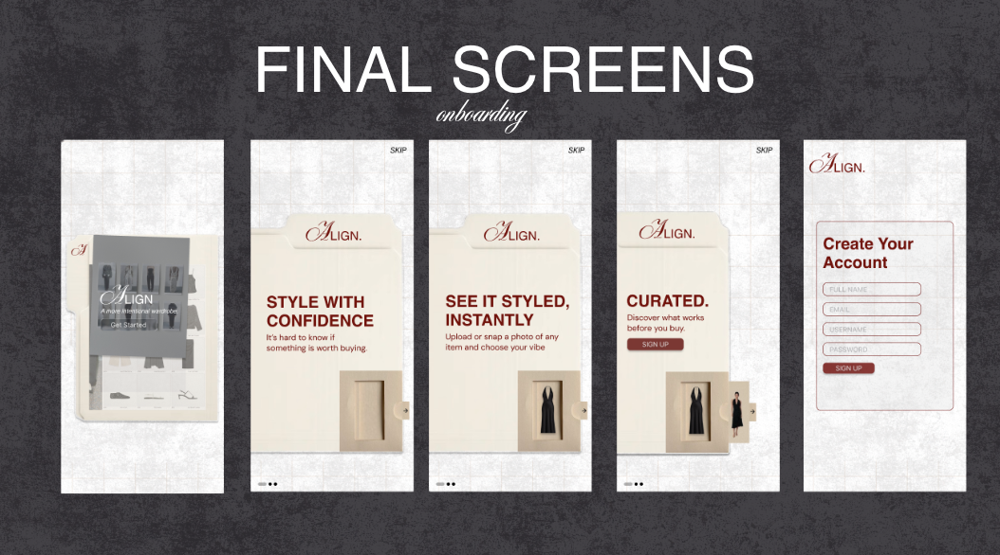
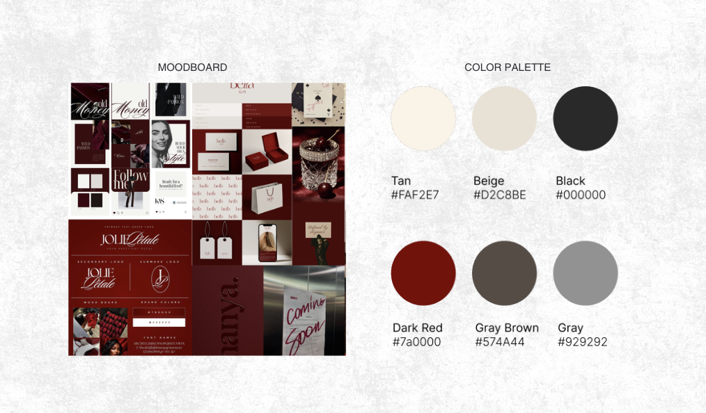
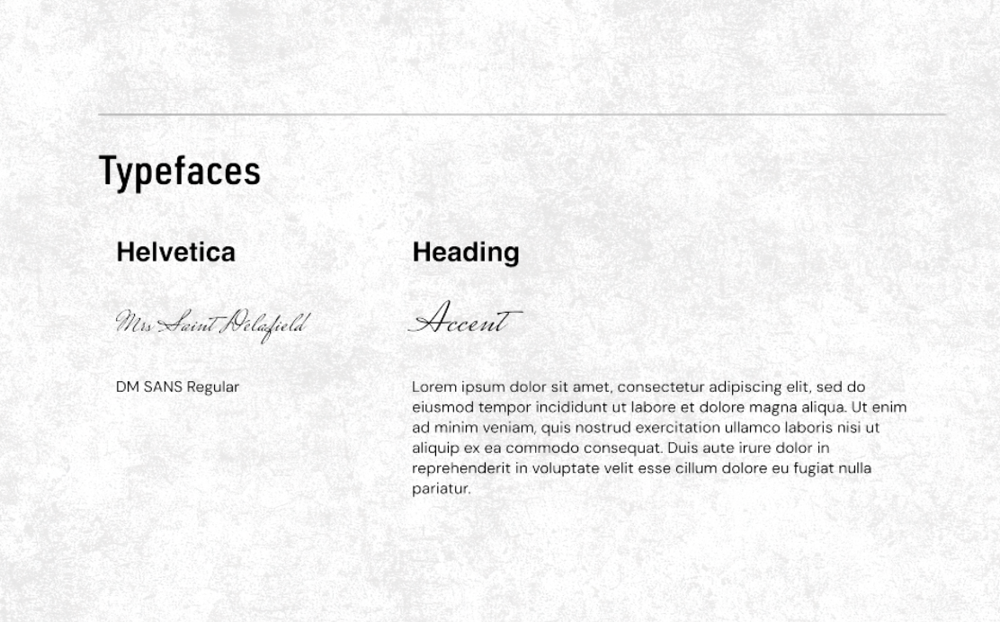
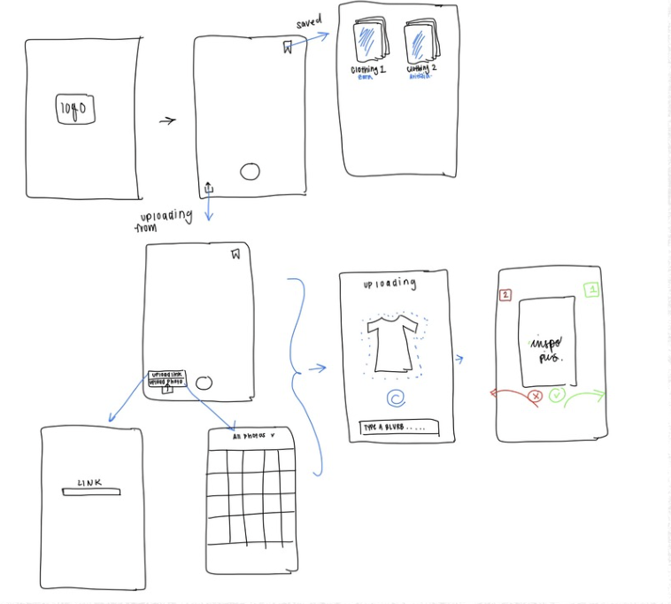
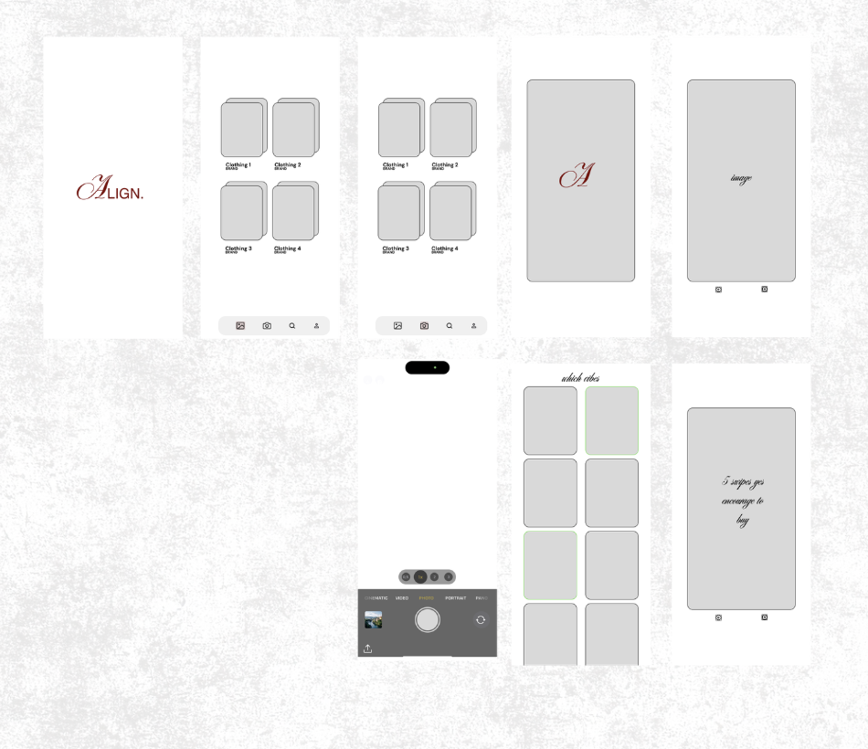

Have you ever been indecisive in a dressing room?
You’re holding a piece you really like, none of your friends are answering, and you just can’t decide. Is this something you love right now, or something you’ll actually wear after today?
As a really indecisive person, I’ve been there so many times. I’d take photos and show my friends waiting outside the dressing room, or send them to friends who weren’t with me. But dressing rooms have terrible service, so my texts wouldn’t send, or my friends would answer after I’d already left. That’s when I realized I always need a second opinion before I buy something.
My whole process was taking a photo, asking my friends, and looking up inspo on Pinterest and TikTok. By the end, I had inspo saved all over my phone and none of it in one place. And it wasn’t just me. So many of my friends shop the exact same way.
- Try it on“Wait, I kind of love this.”
- Take a photo“I need a second opinion.”
- Text my friendsNo service. Not delivered.
- Search for inspoPinterest, TikTok, screenshots everywhere.
- Leave the storeStill not sure if I should’ve bought it.
Existing wardrobe apps optimize for organization and long term efficiency, but my research shows the emotional pain point happens in the dressing room.”
So for my senior capstone, I made Align. It helps you decide, right there in the dressing room, if a piece is worth buying. It also shows you curated outfit inspo from fashion creators on TikTok, Instagram and Pinterest, including niche creators, so you see lots of different ways to style the same piece. Everything you find lives in one spot, the app, instead of being scattered across your phone.
Every app I looked at was built for the closet, not the store.
I compared the three wardrobe apps that came up most, then talked to shoppers through interviews and a survey to understand what that in store moment actually feels like.
Competitive analysis
How the three closest wardrobe apps compare, and where Align fits.
The opening was clear: nobody was designing for the “should I buy this?” moment.
What the research changed.
Every core feature traces back to something I learned. These are the four decisions that shaped the app.
The decision happens in the store, often alone, in a few minutes. Other apps make you upload your whole closet first.
Start with one item. Snap or upload only the piece in your hand.
No setup standing between you and an answer.
Shoppers couldn’t picture how a piece would fit into their real life.
Pick a vibe first: casual, professional or night out.
Outfits show up for the place you’d actually wear them.
Inspiration is scattered across Pinterest and TikTok, and slow to search in a store.
Bring curated looks from fashion creators into one feed.
No more jumping between apps to find a reference.
It’s a high pressure moment. People want a quick gut check, not a long analysis.
A yes or no swipe on each look.
Deciding feels fast and low stakes, so you know before you leave the fitting room.
Snap it, pick a vibe, swipe.
Take a photo of the piece, choose where you’d wear it, and swipe through outfits built around it. A few swipes in, you know if it fits your style, and if it’s worth buying.

Elegant, but not untouchable.
I wanted Align to feel like a boutique, not a utility app. A deep crimson, clean type and soft texture give it a high fashion feel without making it feel exclusive.
The logo pairs a calligraphic “A” with a clean wordmark: a little classic, a little modern, like the outfits it helps you build.



How I got there.
I mapped the flow first, sketched the swipe on paper, then tested a mid fidelity version before moving into final screens. The biggest change along the way was cutting steps: every screen that slowed down the decision came out.


What came out of it.
Align was my senior capstone at Northeastern. It took me through the whole process on my own, from research to brand to a prototype ready to present.
- A high fidelity app prototype with the full onboarding and swipe flow
- A brand book with the logo, colors and type
- A launch poster series
- A social content system for Instagram and TikTok